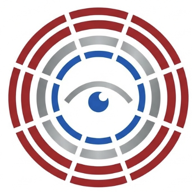

I am a postdoc in the Data Systems Group at MIT advised by Tim Kraska and Sam Madden. I completed my Ph.D. at UW-Madison advised by Theodoros Rekatsinas and Shivaram Venkataraman. I am also affiliated with the CMS experiment at CERN. My research interests lie in the intersection of systems, databases, and artificial intelligence, and I am especially interested in AI for scientific operations and discovery.
Projects
-
Akmon and OKGs
Operational knowledge graphs (OKGs): consistent, versioned knowledge bases of an organization's data.
-

Archi
Agentic operations at the CMS experiment, in use by CMS Computing Operations.
Publications
2026
2025
2024
2023
2021
Experience
- Apple · Research InternshipJun 2022 – Mar 2023
Jun 2023 – Mar 2024 - Orfium · SWE InternshipJun 2019 – Aug 2019
- Delphix · SWE InternshipJun 2018 – May 2019
Service
- VLDB · Program Committee2027
- Knowledge Bases and Agents Workshop, CERN · Organizer2026
- ICDE · Program Committee2026
- VLDB Journal · Reviewer2025
- SIGMOD · Program Committee2025
Awards
- Apple Scholar in AI/ML2023
- DeWitt Undergraduate Scholarship2018
- Goldwater Scholarship Honorable Mention2018
- Hilldale Undergraduate Research Fellowship2017